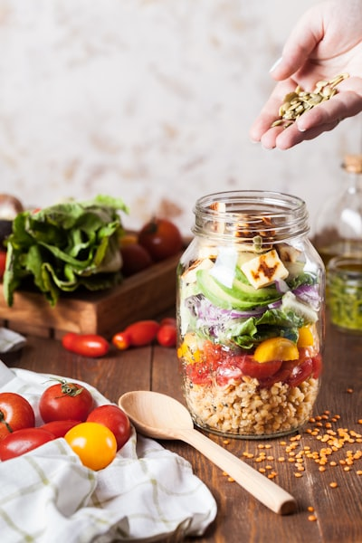
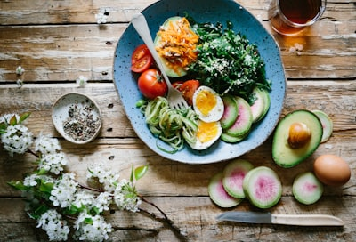

こんなお悩みはありませんか？

プロが監修したフレーバーで、美味しく続けられる。

たんぱく質やビタミンなど、理想のカラダづくりをサポート。
水や牛乳に溶かすだけで、簡単に置き換えが可能。
チョコレート味が本当に美味しくて、毎朝の朝食置き換えが楽しみになっています。1ヶ月で3kg減りました。
食事を減らすと栄養が偏っていたのが悩みでしたが、RESET PROTEINで必要な栄養を手軽に補えています。
2ヶ月間、夕食を置き換えるだけで無理なく5kgのダイエットに成功。リバウンドもなく体型をキープできています。